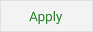

Uploading/Downloading
If the cloud file "grocerygopher.db" already exists then the Google
Drive Sync dialog window opens prompting you to:

Downloading an existing cloud file during setup is the default
action: the checkbox is checked and download is highlighted in bold.
Information regarding the size of the Google Drive File and the time
saved is also highlighted. Downloading the cloud file will
overwrite and replace the grocery list already on your device.
The "Download" checkbox is unchecked by checking the "Upload..."
checkbox,
Checking the "Upload..." checkbox will highlight in bold the file
information regarding the grocery list on your device and set the
action to uploading instead of downloading. Uploading will replace
the Google Drive File with the grocery list currently on your
device.
 Touching the
"Apply" button will apply the action you have selected to the data
file highlighted in bold.
 Pressing the
"Cancel" button disables use of Google Drive and returns you to the
Settings menu.
Pressing the
"Cancel" button disables use of Google Drive and returns you to the
Settings menu.